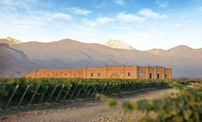
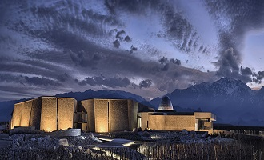
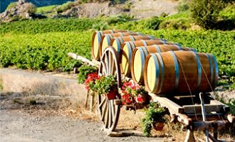
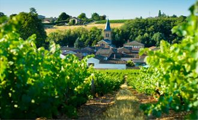
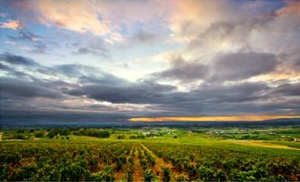

Argentina es uno de los principales países productores a nivel mundial y la calidad de sus vinos son reconocidos en el mundo entero. Como no podía ser de otra manera, cuenta con diversas regiones productoras de esta bebida; entre las que se destacan:
Rutas del vino
Argentina
Mendoza
La vendimia es el mejor momento del año para recorrer las rutas del vino en Mendoza. Las bodegas ofrecen programas especiales para vivir la cosecha en primera persona Más allá de la belleza natural de los paisajes cordilleranos, en los últimos años quedó claro que el principal atractivo turístico mendocino son sus bodegas y viñedos. El enoturismo es el turismo temático que más viajeros de todo el mundo atrae hacia la región cuyana, favorecido también por el arribo de vuelos directos desde importantes capitales del mundo. La provincia de Mendoza conjuga sus bellos paisajes con una producción muy propia y genuina como es el vino, en torno al cual se erigieron propuestas turísticas, instalaciones y servicios de un nivel que muy pocos lugares de la Argentina ostentan. Hoteles de lujo, turismo aventura, alta gastronomía y actividades culturales son solo algunos de los puntos más destacados de su oferta. Entre febrero y abril, en época de vendimia, sencillamente todo gira en torno al vino. Por eso, este es el mejor momento para conocer el alma de Mendoza. En esta provincia hay tantas bodegas que podríamos pasar meses recorriendo distintos establecimientos. Muchas de ellas cuentan con excelentes servicios, alojamientos, restaurantes y propuestas temáticas, como también la posibilidad de participar de la cosecha, realizar cabalgatas entre los viñedos e incluso hacer un corte de vino propio. A continuación, presentamos cinco bodegas de distintos estilos que vale la pena conocer en un viaje al corazón de la vendimia:
SuperUco
En Vista Flores, dentro de la Villa de los Enólogos del complejo The Vines of Mendoza, se encuentra el establecimiento de los cuatro hermanos Michelini. Es la bodega biodinámica SuperUco. Allí, todo está hecho en forma circular: la plantación de los viñedos, la huerta orgánica, los corrales de los animales e incluso la espaciosa bodega octogononal. La propuesta turística de SuperUco es integral, ya que además de las degustaciones, de entre 6 y 8 vinos y la visita al viñedo, este proyecto permite comprender integralmente de qué se trata la filosofía de trabajo biodinámica y ecológica. Asimismo, es posible organizar un almuerzo con reserva previa para grupos de 6 o más personas
Zuccardi Valle de Uco
En el Paraje Altamira, al sur del Valle de Uco, se levanta imponente la bodega de Famillia Zuccardi inaugurada en 2016. El edificio, cuyo diseño es un homenaje a la montaña, fue construido con piedras del lugar y cemento de afuera hacia adentro: desde las paredes hasta las piletas de hormigón sin cobertura epoxi donde se elaboran los vinos. Más allá de su arquitectura, las visitas y degustaciones, el otro gran encanto de esta bodega es el restaurante Piedra Infinita, con vista a la Cordillera de Los Andes. En este escenario único de montaña y viñedos ofrecen un menú de cuatro pasos elaborado con productos regionales de estación y maridado con los vinos de alta gama de Zuccardi.


Chandon
El lugar indicado para conocer el mundo de los espumantes en la Argentina es sin dudas la Bodega Chandon, que está cumpliendo sus 60 años en nuestro país. Situada en Agrelo, Luján de Cuyo, esta bodega ofrece degustaciones y visitas guiadas para comprender, de forma didáctica, cómo se elaboran los vinos con burbujas. Además, en el Bistró Chandon es posible disfrutar de un menú de 4 pasos especialmente concebido por el chef Matías Gil para potenciar los aromas y sabores característicos de los distintos espumantes. Una experiencia gastronómica diferente para quienes busquen descubrir nuevas posibilidades en el mundo de los maridajes.
Salta
Cuando el vino y el turismo comenzaron a promocionarse juntos, nació en Salta la "Ruta del Vino", circuito que comienza en la capital, cruza los pueblos históricos del Valle de Lerma, y culmina en Cafayate. Y luego de Chicoana, cuando el Valle de Lerma queda atrás, la Quebrada de Escoipe y la Cuesta del Obispo nos lleva hasta el Valle Calchaquí, que a los 2.280 metros de altura, muestra al pueblo de Cachi, junto a su nevado. En Cachi, tierra de los calchaquíes, están los viñedos que al igual que en Seclantás, producen vinos artesanales. Y después Molinos, pueblo del siglo XVII, donde además de vinos de altura y artesanales, está Entre Ríos, reserva de vicuñas, las ruinas de El Churcal y el Hostal de Molinos, residencia del último gobernador español de Salta. Más adelante, Colomé, donde los viñedos maduran a 2.400 metros de altura, lugar donde se producen las variedades Cabernet-Malbec, y el vino frutado. La ruta sigue por Angastaco, San Carlos y Animaná, pueblo donde don Virgilio Plaza, en la La Perseverancia, planta la primera variedad francesa. Y finalmente Cafayate, rodeada de médanos de arena blanca, viñedos y bodegas y se participa en octubre de la Fiesta del Torrontés, que organiza la bodega La Banda.
España
Las Rutas del Vino de España invitan a descubrir toda la tradición y la cultura en torno al vino. Visitando bodegas , alojándose entre viñedos y degustando las variedades más destacadas, estos recorridos invitan a aprender y, sobre todo, a disfrutar. Las experiencias van desde sobrevolar en globo los campos de vides, recorrer viñedos en bicicleta, catas a ciegas o la participación activa en el proceso de producción. Aunque las propuestas son incontables, seleccionamos unos pocos itinerarios por regiones emblemáticas que siguen marcando tendencia.
Rías Baixas, la casa del albariño
En el noroeste de la península, las Rías Baixas de Galicia sorprenden por la sombra de sus parras, su albariño y el perfecto maridaje con la gastronomía del mar. En alusión a esta geografía, el vino Rías Baixas es una de las cinco denominaciones de origen de vino existentes en Galicia donde 200 bodegas locales están dedicadas a su elaboración. Dentro de la Denominación de Origen Rías Baixas, la uva Albariña es la que ocupa mayor superficie de cultivo; el vino Albariño se caracteriza por poseer un sabor fresco y suave, que armoniza a la perfección con los platos de pescado, mariscos y con los productos del mar característicos de la zona. Una visita a Galicia y el mundo del vino ofrece experiencias exclusivas como las catas combinadas con astronomía y clases magistrales bajo las estrellas, o imperdibles como la Fiesta del Albariño en Cambados o la Fiesta del Marisco en O Grove, recorridos de naturaleza y aves en el Parque Nacional de las Islas Atlánticas, tratamientos de belleza en los balnearios y centros termales de La Toja. También son recomendables los paseos en catamarán por la ría de Arousa, los deportes náuticos en las playas de Sanxenxo o practicar golf en los municipios de Meis y O Grove, rodeado de un magnífico entorno.
Córdoba y Jeréz, cruce de civilizaciones en Andalucía
Los vinos de Montilla-Moriles se han convertido en unos excelentes embajadores de la tierra de Andalucía y su prestigio es fruto de una larga tradición vinícola y de años de crianza en medio de un paisaje protagonizado por vides, olivos y cereales, trilogía de la cultura mediterránea. Esta ruta atraviesa varias localidades, permite descubrir un patrimonio histórico valioso y monumental y está enmarcada en la ciudad de Córdoba, que alberga el monumento islámico más importante de Occidente y un entramado de calles en las que confluyen todas las civilizaciones que el han forjado. La gama de vinos producidos en la tierra de Montilla-Moriles es amplia y puede alternarse con catas de aceite, otro producto estrella de la zona con denominación de origen. Vale la pena combinar un recorrido enológico con alguna de sus fiestas populares como el Festival de los Patios Cordobeses o la Fiesta de la Vendimia de Montilla, donde se pueden ver desde carreras de caballos hasta cómo se pisa la uva a la manera tradicional. Imperdibles: los espectáculos de flamenco y el impresionante conjunto monumental de Córdoba, declarado Patrimonio de la Humanidad por la UNESCO, donde sobresale especialmente la Mezquita. En Montilla, la ruta por bodegas se puede combinar con una visita al Centro de Arte Contemporáneo y Vino ; un referente para los nuevos creadores. Y para realizar un "viaje al pasado" la Villa Romana Fuente de Álamo, con su yacimiento dedicado a la producción de vino y aceite. En Andalucía, provincia de Cádiz , es imprescindible hablar de Jerez y su célebre vino, donde es un clásico visitar las más afamadas bodegas como Tío Pepe y Osborne , entre muchas otras. En el área de Jerez hay más de 40 bodegas, auténticos museos del vino, cargados de historia, leyendas y en un ambiente de película. Cuna del Flamenco, sus tablaos de tradición, los mejores espectáculos ecuestres y monumentos de la cultura romana, musulmana y cristiana, hacen de esta ciudad un gran atractivo
Francia
Francia es el hogar de una de las gastronomías más exquisitas del mundo, pero sobre todo es un destino conocido por sus vinos. Las enormes extensiones de viñedos que se hallan a lo largo y ancho del país ya anticipan que Francia es uno de los destinos idílicos para los amantes del vino. Merece la pena conocer algunas de estas rutas, visitar sus bodegas, realizar degustaciones y admirar la belleza de estos paisajes. Algunas de sus mejores rutas son:
Viñedos de Languedoc y Rosellón: Los viñedos de las regiones de Languedoc y Rosellón fueron hasta principios de la década de los 80, el principal productor de vino del mundo. Entre Perpignan y Montpellier hay grandes zonas vitivinícolas como Corbières, Minervois o Limoux. De aquí proceden la Blanquette de Limoux, el vino espumoso más antiguo del mundo; los vin de pays (vinos de la tierra); o las denominaciones Corbières o Fitou
Viñedos del Valle del Ródano: Entre las ciudades de Avignon y Lyon se extiende el espléndido Valle del Ródano. Se trata de un lugar propicio para el cultivo de viñedos. En concreto, a ellos se dedican la friolera de 56.000 hectáreas. Algunas de las denominaciones de origen son Côtes-du-rhône, Tricastin, Ventoux o Côtes du Vivarais. En el Valle del Ródano predomina la uva garnacha, aunque también la syrah o la moscatel
Viñedos de Beaujolais: Los viñedos de Beaujolais se localizan al norte de Lyon, en una región conocida por su larga tradición vitivinícola. El vino más popular de esta zona es el Beaujolais Nouveau, un vino joven de merecida fama mundial. Como curiosidad, cabe señalar que se trata de uno de los pocos viñedos en Francia en los que la vendimia se hace a mano. La uva estrella en esta región es la gamay, la cual da como resultado vinos de sabor ligero y afrutado.



Acompaños en nuestras próximas excursiones
| Destino | Salida | Duración | Conoceremos | Importe |
|---|---|---|---|---|
| Mendoza | 30/02/2022 | 5 días |
|
Consultar |
| Salta | 30/02/2022 | 5 días |
|
Consultar |